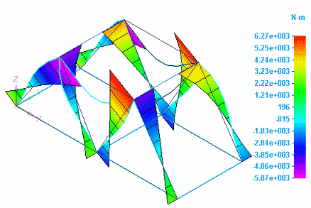
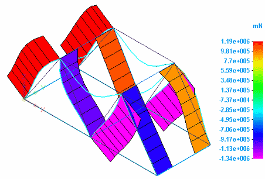
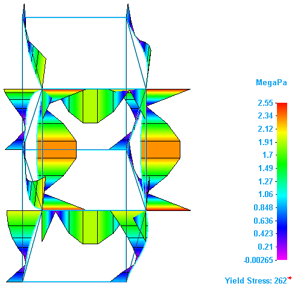
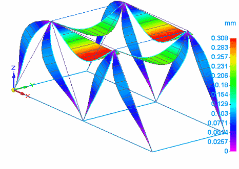

Beam diagrams
In the Frame environment, beam diagrams are available for structural frame models with a beam mesh type. Rather than finding shear and moment at a single point, as when a point load is applied to the beam, beam diagrams show where shear forces and bending moments change along the length of a beam. This also applies to a distributed load.
You can use beam diagrams to identify the maximum and minimum shear and moment locations.
You can use the Home tab→Show group→Display Options menu to display the beam diagram for end reaction forces, stress, and displacement.
Direction signs
-
For bending moments, a positive value bends a beam downward, and a negative value bends the beam upward.
-
For shear forces, a positive value skews the beam so that the left side turns up and the right side turns down. A negative value turns the right side of the beam up and the left side down.
Beam diagrams for end reaction results
You can show the beam diagram for end reaction forces by selecting Beam End Reactions from the Result Type list, and selecting Beam Diagram from the Display Options menu.
-
Moment results are displayed when you select one of the moment plots from the Result Component list:

-
Shear results are displayed when you select one of the shear force plots from the Result Component list:

Beam diagrams for stress results
You can show the beam diagram for stress results by selecting Stress from the Result Type list, and selecting Beam Diagram from the Display Options menu.
Yield stress is calculated when you select one of the combined stress plots from the Result Component list:

Beam diagrams for displacement results
You can show the beam diagram for displacement results by selecting Displacement from the Result Type list, and selecting Beam Diagram from the Display Options menu.
Translation results are displayed when you select one of the translation plots from the Result Component list:

How do I
Plot resultsLearn more
Plotting resultsResult plots for mixed mesh models
Displacement component plots
Stress component plots
Constraint component plots
Strain component plots
Beam properties
Beam reaction component plots
Beam stress component plots
Temperature plots
Heat flux component plots
Applied temperature plots